Iniciación a Inkscape
Diseño vectorial y aplicaciones prácticas
0. Introducción
Este taller introductorio a Inkscape pretende dar una visión general del programa y de sus posibilidades, y no tanto servir de guía completa de uso (que se puede encontrar en la documentación oficial).
Objetivos del taller
- Comprender los principios de la imagen vectorial y de la de mapa de bits, y las herramientas propias de cada una.
- Reconocer cuándo conviene usar Inkscape.
- Aprender a crear y modificar objetos en Inkscape.
- Aprender a generar figuras con lenguajes de programación y retocarlas en Inkscape.
Imagen vectorial vs imagen de mapa de bits
Imagen de mapa de bits
Una imagen de mapa de bits, bitmap o raster es una estructura de datos que define una cuadrícula de píxeles, cada uno de los cuales tiene un color específico. Los mapas de bits se utilizan para representar imágenes con detalles finos y colores precisos (fotografías, ilustraciones, etc.).
Los formatos de imagen de mapa de bits más comunes son JPEG, PNG, GIF, BMP, TIFF y WebP. Son adecuadas para fotografías y otras imágenes formadas por píxeles.
Imagen vectorial
Una imagen vectorial es un gráfico digital compuesto por formas geométricas (puntos, líneas, curvas, polígonos…) que se definen mediante fórmulas y ecuaciones matemáticas, en lugar de utilizar una cuadrícula de píxeles.
Las imágenes vectoriales tienen las siguientes características:
- Ecalabilidad infinita: se pueden ampliar o reducir sin perder calidad.
- Independencia de elementos: cada figura o trazo dentro de la imagen es independiente y puede ser editado por separado.
- Archivos ligeros: generalmente son más pequeños que las imágenes de mapa de bits, lo que los hace más adecuados para la web y la impresión.
- Menor realismo fotográfico: no sirven para representar fotografías complejas o con muchos detalles de luz y sombra, ya que están pensadas para diseños limpios y definidos.
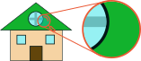
Son adecuadas para esquemas, logotipos, iconos, diagramas e ilustraciones técnicas. El contenido se puede modificar objeto por objeto.
Los formatos de imagen vectorial más comunes son SVG, EPS, PDF, AI…
Inkscape
¿Qué es Inkscape?
Inkscape es un editor de gráficos vectoriales gratuito y de código abierto. Permite crear ilustraciones, diagramas, iconos, logotipos y figuras técnicas, así como modificar dibujos existentes y preparar imágenes para documentos y presentaciones.
A diferencia de un editor de imágenes tradicional, Inkscape trabaja principalmente con objetos vectoriales: formas, líneas, curvas y texto que se pueden editar de manera independiente.
Puede considerarse la alternativa libre a Adobe Illustrator. La figura siguiente resume el panorama de aplicaciones de diseño, tanto de mapa de bits como vectoriales, y sitúa Inkscape entre ellas.
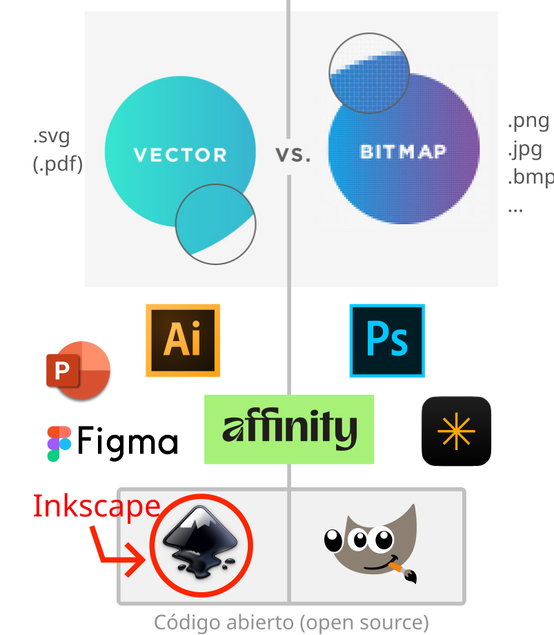
¿Para qué podemos usar Inkscape?
- Dibujar diagramas, mapas mentales, etc.
- Preparar esquemas para informes y artículos científicos.
- Crear ilustraciones para presentaciones y pósteres.
- Diseñar iconos, infografías y logotipos.
- Anotar, recortar y combinar imágenes.
- Mejorar la presentación de gráficos generados mediante herramientas científicas o programación.
- En definitiva, para cualquier tipo de diseño gráfico que no requiera un alto nivel de realismo fotográfico. Podemos transformar en una imagen cualquier cosa que se nos ocurra
… Convertir nuestras ideas en imágenes… ¡Una imagen vale más que mil palabras!
1. Primeros pasos
La interfaz
La interfaz (Figura 4) se organiza alrededor del lienzo, donde se encuentra el dibujo, y de distintas herramientas y paneles.
- Barra de herramientas lateral (izquierda): permite crear formas, dibujar trayectos, editar nodos, seleccionar objetos y añadir texto.
- Barra de controles superior: muestra las opciones de la herramienta activa o del objeto seleccionado.
- Lienzo: zona en la que construimos y organizamos el dibujo.
- Paneles de diálogo (derecha): proporcionan controles adicionales para propiedades como relleno, borde, capas y exportación.
La disposición exacta puede variar según la versión y la configuración del programa.
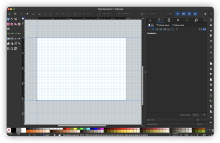
Una regla importante
Los controles disponibles dependen del contexto. Por ejemplo, al seleccionar un rectángulo aparecen opciones propias de esa forma; al seleccionar texto aparecen controles tipográficos, y al utilizar la herramienta de nodos aparecen opciones para editar la geometría del trayecto.
No es necesario memorizar todos los controles: basta con reconocer dónde están y saber cuándo buscarlos.
El documento
Un documento de Inkscape contiene el dibujo y define la página sobre la que trabajamos. Antes de empezar, conviene comprobar sus dimensiones y unidades.
En Archivo → Propiedades del documento podemos configurar, entre otras cosas, el tamaño de la página y sus unidades, la orientación de la página, la cuadrícula y las guías.
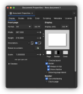
Guías y cuadrícula
Las guías son referencias visuales que ayudan a alinear objetos. La cuadrícula facilita la colocación regular de elementos y puede utilizarse como referencia para construir dibujos geométricos. La Figura 4 muestra las guías y la cuadrícula activas.
El ajuste (snap) permite que objetos, nodos o puntos se acerquen y encajen con determinadas referencias, como guías, cuadrículas u otros objetos, según las opciones activadas. Se activa con el siguiente icono:
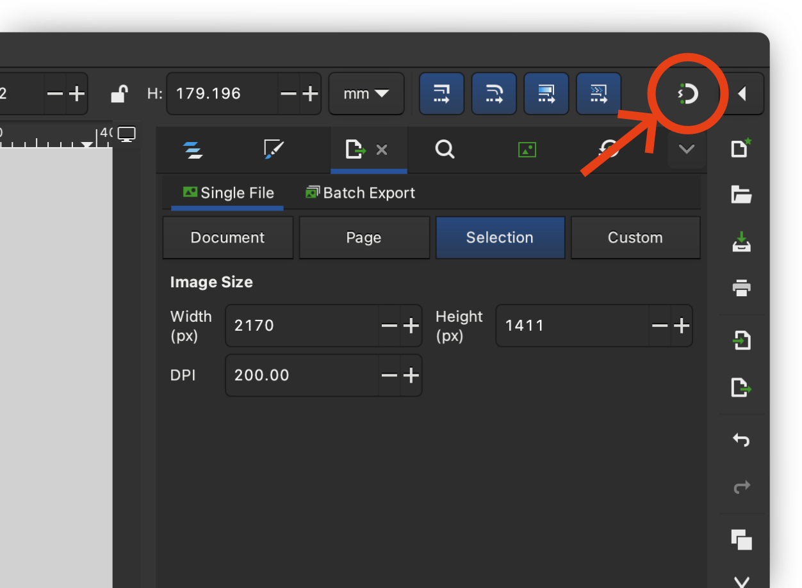
Objetos
Los objetos son las entidades que se pueden crear y modificar en Inkscape. Esencialmente, se dividen en:
- Formas básicas: rectángulos, elipses, polígonos y espirales.
- Trayectos: secuencias de puntos conectados por líneas.
- Texto: cadenas de caracteres que se pueden editar como cualquier otro objeto.
- Elementos de mapa de bits: fotografías o gráficos importados, formados por píxeles en lugar de vectores.
2. Creación de objetos
La barra de herramientas lateral (Figura 7) permite crear y modificar objetos.
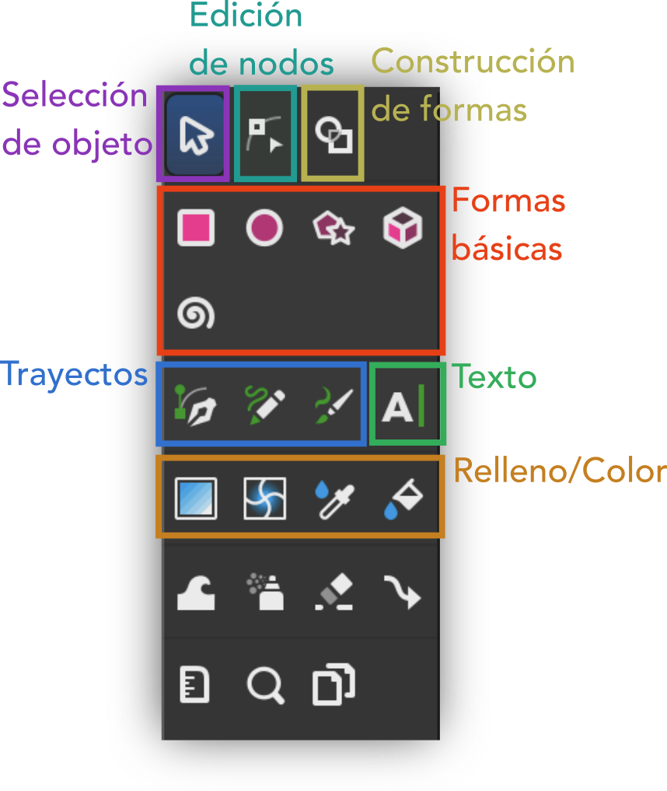
Formas básicas
Inkscape permite crear varias formas básicas: rectángulos, elipses, polígonos y espirales.
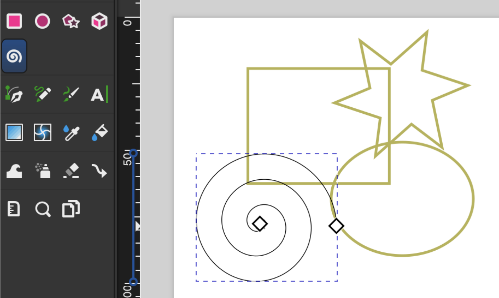
Trayectos
También podemos crear trayectos, que son una secuencia de puntos conectados por líneas. En esencia, las formas básicas son trayectos cerrados.
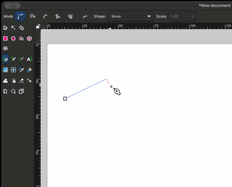
Texto
Es posible añadir texto, configurando su fuente, tamaño, color y alineación.
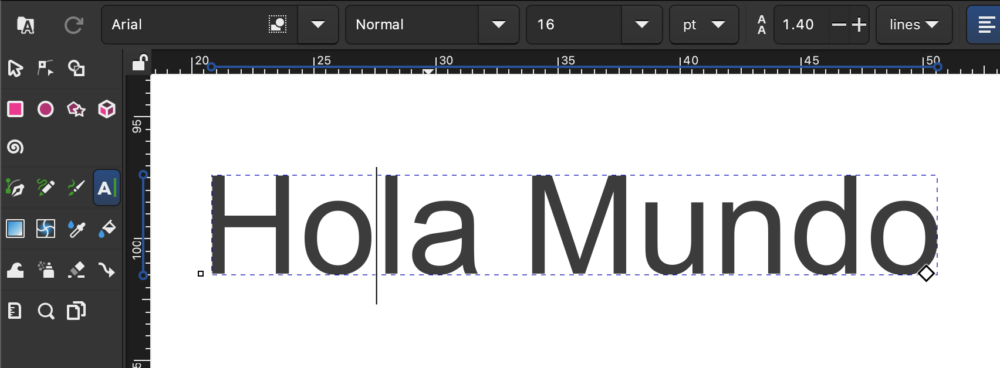
3. Modificación de objetos
Selección y transformación
La herramienta de selección permite mover, escalar, girar y transformar objetos. Al seleccionar un elemento, podemos:
- Redimensionarlo y moverlo libremente (un click).
- Si mientras mantenemos pulsado Ctrl, se redimensiona manteniendo la proporción y se desplaza únicamente en una dirección.
- Si mientras mantenemos pulsado Shift, se redimensiona manteniendo el centro.
- Rotarlo (dos clicks).
- Si mientras mantenemos pulsado Ctrl, se rota en un ángulo múltiplo de 15°.
- Si mientras mantenemos pulsado Shift, se rota en torno a la esquina contraria en lugar del centro.
- Transformarlo (tres clicks).
La barra de controles superior que aparece al seleccionar un objeto nos permite hacer acciones rápidas como rotar/voltear el objeto, o elegir su orden de apilamiento.
Edición de nodos
Los nodos definen la geometría de un trayecto. Con la herramienta de nodos podemos moverlos y modificar las curvas que conectan unos con otros.
La barra de controles superior, en este caso permite unir nodos, separarlos, modificar su curvatura, etc.
Relleno y borde
El relleno y borde de un objeto se puede configurar, bien con los botones de la barra lateral izquierda (Figura 7), bien con los paneles de diálogo de la derecha, que hasta ahora no habíamos visto:
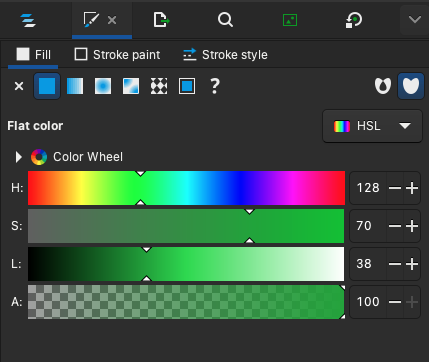
4. Operaciones sobre objetos
Recorte / Clip
Un recorte o clip es una operación que permite seleccionar una parte de un objeto y eliminar el resto.
Mientras que en otros programas existe una herramienta de recorte ‘’dedicada’’, en Inkscape esta operación se realiza mediante la intersección de dos objetos:
- El objeto que se quiere recortar, situado a mayor profundidad en la pila de objetos.
- El objeto que actúa como máscara, situado a menor profundidad.
Para realizarlo, se seleccionan los dos objetos y se aplica el recorte con: Objeto → Recorte → Establecer Recorte (Object → Clip → Set Clip).
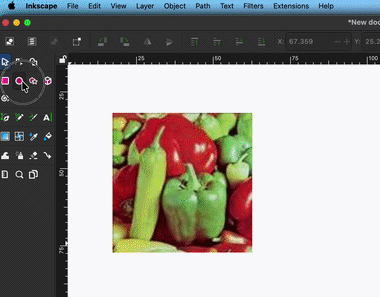
Máscara
Una máscara es una operación conceptualmente similar a un recorte, pero que tiene en cuenta las características (color y transparencia) del objeto que actúa como máscara. Con los objetos de ejemplo anteriores, una máscara da el siguiente resultado:
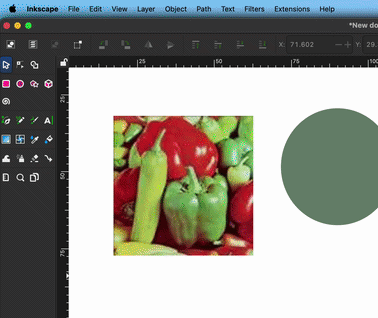
Filtros
Inkscape permite aplicar filtros a los objetos, como el desenfoque, el contorno, el efecto de brillo, etc. Para ello, se selecciona el objeto y se aplica el filtro con el menú Filtros.
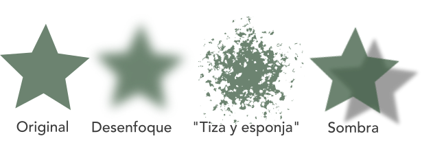
5. Operaciones sobre subtipos de objetos
Trayectos
Objeto a trayecto
Es posible convertir cualquier tipo de objeto (forma, texto, etc.) en un trayecto. Para ello, se selecciona el objeto y se aplica la conversión con: Trayecto → Objeto a trayecto (Path → Object to Path).
Operaciones booleanas
Una operación booleana es una operación que permite combinar dos objetos para crear un nuevo objeto. Las operaciones booleanas más comunes son la unión, la intersección y la diferencia. Para aplicarlas, se seleccionan las dos trayectorias y se recurre al menú Trayecto:
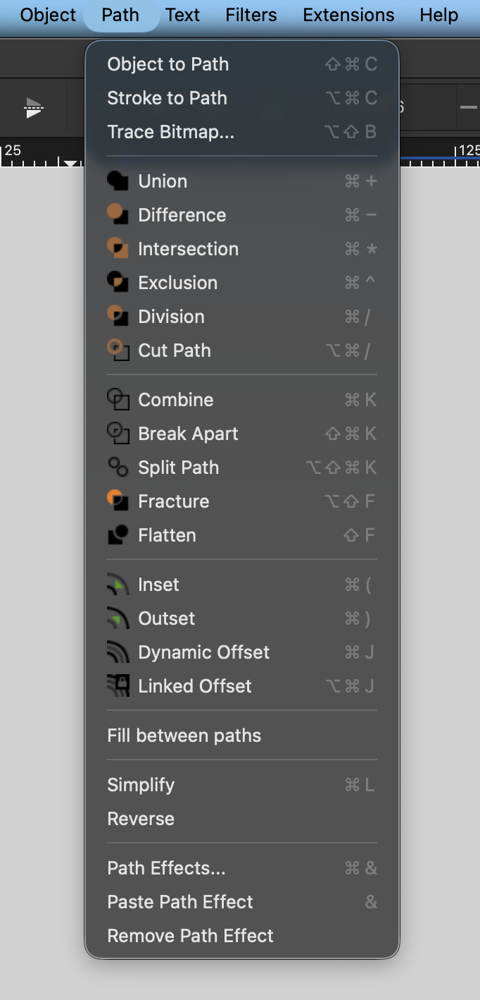
Textos
Modificar textos sin perder su propiedad de “texto”
Es posible, una vez creado un texto, modificar aspectos como la fuente, el tamaño, el color, o el propio texto en cuestión (ver Figura 10).
Convertir texto en trayecto
Como ya hemos visto, es posible convertir cualquier tipo de objeto (entre ellos, texto) en un trayecto. De esta manera, podemos aplicar todo tipo de operaciones sobre él, modificar su forma, utilizar operaciones booleanas sobre él, etc., con el inconveniente de que ya no se puede editar como texto.
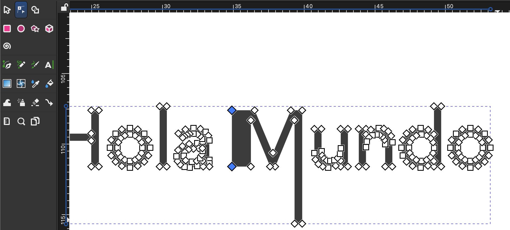
Elementos de mapa de bits
Aunque Inkscape es un programa de diseño vectorial, es posible importar imágenes de mapa de bits (ver Sección 9.1), con las que se puede trabajar como si se tratase de cualquier otro objeto.
Convertir imagen a vector
Esta funcionalidad es extremadamente útil, y nos permite convertir una imagen de mapa de bits en un objeto vectorial, compuesto por trayectos. Es especialmente útil con imágenes simples como logotipos, iconos, tipografías, esquemas, etc., y no tanto con imágenes complejas como fotografías.
Para convertir una imagen a vector, se puede ir a la opción Trayceto → Vectorizar mapa de bits o directamente en el de diálogo de la derecha, en la pestaña con el mismo nombre.
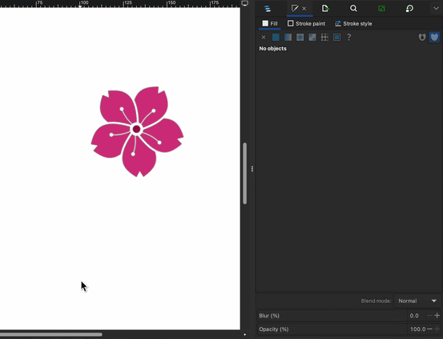
6. Agrupar/Desagrupar objetos
Es posible agrupar objetos para trabajar con ellos como un único objeto. Para ello, se seleccionan los objetos y se aplica la agrupación con: Objeto → Agrupar (Object → Group), o simplemente hacer click derecho y seleccionar “Agrupar”.
Es posible desagrupar un objeto para trabajar con los objetos que lo componen por separado. Para ello, se selecciona el objeto y se aplica la desagrupación con: Objeto → Desagrupar (Object → Ungroup), o simplemente hacer click derecho y seleccionar “Desagrupar”.
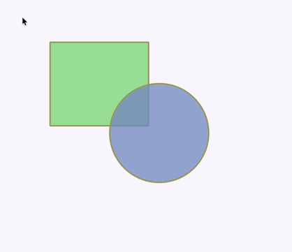
7. Capas (Layers)
En Inkscape, las capas te ayudan a organizar, ordenar y controlar los elementos de tu dibujo como si fueran hojas de papel transparentes. Son más o menos equivalentes a las capas de Photoshop o Illustrator.
Para gestionar las capas, podemos utilizar el menú Objeto → Capas y Objetos (Object → Layers and Objects), o simplemente, hacer click en la pestaña Capas y Objetos en el menú de diálogo de la derecha.
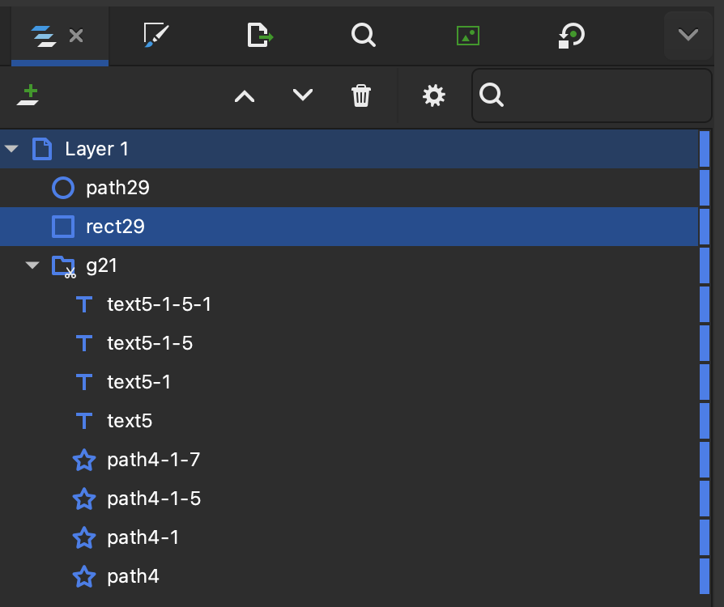
Es posible realizar las operaciones habituales sobre las capas: crear, eliminar, cambiar su orden de apilamiento, etc.
También es posible crear y visualizar grupos de capas (se muestran como carpetas), así como acceder a los objetos que los componen.
Por último, es posible ocultar y mostrar las capas, así como bloquearlas (para que no se puedan editar).
8. Importación de archivos
Importar imagen
Para importar una imagen, se puede recurrir al menú Archivo → Importar (File → Import), o bien arrastrar la imagen desde el explorador de archivos al lienzo.
Una vez hecho esto, nos pedirá elegir el tipo de importación:
- Embedded: la imagen se importa como un objeto incrustado, lo que significa que si la imagen cambia en el archivo original, no lo hará en Inkscape.
- Linked: la imagen se importa como un objeto vinculado, lo que significa que si la imagen cambia en el archivo original, también lo hará en Inkscape.
Normalmente se elegirá la opción Embedded, ya que no depende de la ruta del archivo original. El inconveniente es que la imagen de Inkscape ocupará más espacio en memoria porque habrá creado una copia de la imagen que hemos importado.
Importar gráficos vectoriales (en SVG o PDF)
Cuando importamos un fichero SVG o PDF dentro del lienzo, aparecen los siguientes cuadros de diálogo:
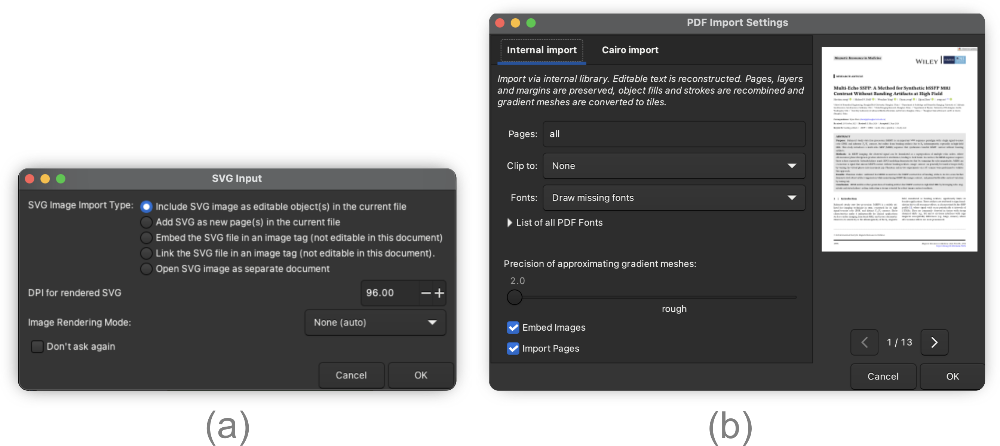
9. Exportación y guardado de archivos
Guardar tu trabajo
Inkscape es un programa bastante estable, pero algunas acciones desafortunadas pueden provocar que se cierre inesperadamente. Para evitar perder tu trabajo, lo mejor es guardar tu dibujo con frecuencia. Por eso, es recomendable utilizar con regularidad el atajo de teclado Ctrl + S.
Al guardar tu archivo por primera vez, asígnale un nombre y selecciona una de las siguientes extensiones:
.svg (Inkscape SVG)
Guarda todos los datos del archivo, incluso aquellos útiles solo para la edición en Inkscape (no en otros editores)..svg (SVG plano)
Adecuado para compartir tu dibujo con otras personas que no usen Inkscape pero sí el formato SVG, por ejemplo, al visualizar una imagen SVG en una página web..svgz (SVG Inkscape/SVG plano comprimido)
Guarda el archivo comprimido para ahorrar espacio en el disco.
Exportar a otros formatos
Es posible exportar el dibujo a otros formatos, como PNG, JPG, PDF, etc. Para ello, se puede recurrir al menú Archivo → Exportar (File → Export), o bien hacer click en el botón de la barra de herramientas lateral.